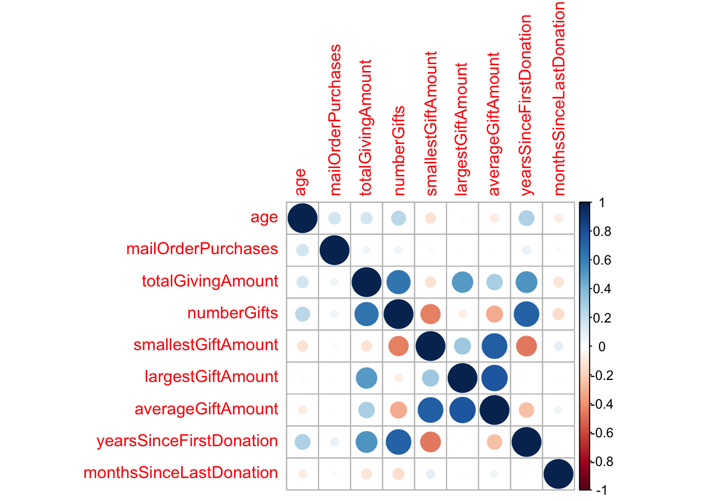
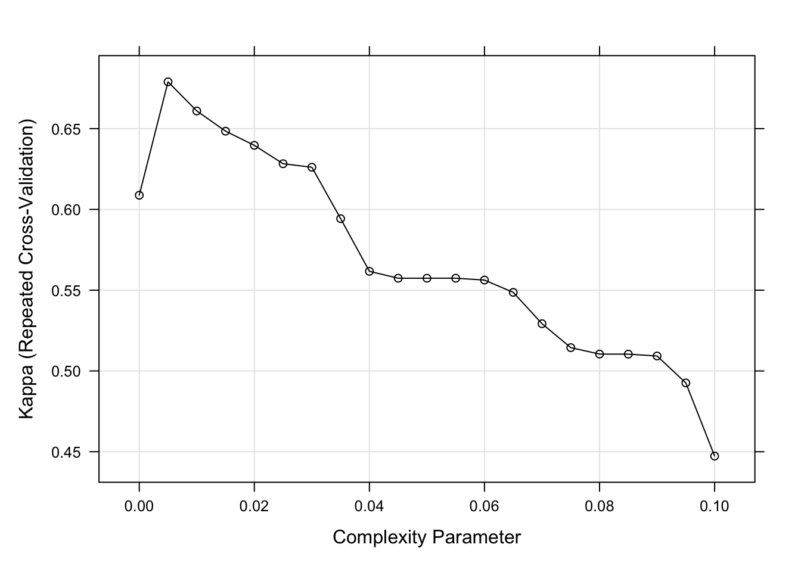
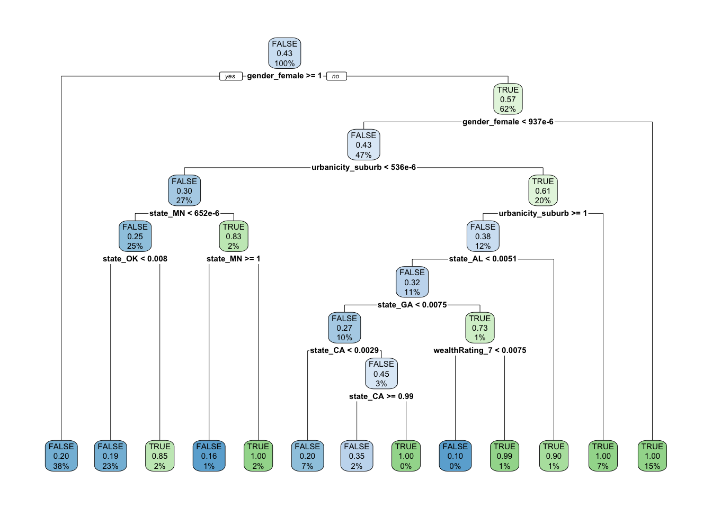

The objective of the NVO is to predict a binary outcome: whether a person will respond to a mailing or not. Classification is the right approach to accomplish this task. By utilizing classification, the organization can take advantage of historical data to identify patterns or characteristics that are indicative of a positive response. This will enable the NVO to target individuals who are more likely to respond, increasing the overall response rate.
2.
Once a classifier is built, the National Veterans Organization (NVO) can use it to predict the likelihood of potential donors responding to their mailings. Figuring out which variables contribute to a person being more likely to respond enables the organization to optimize their outreach efforts. If the classifier is accurate, this approach can lead to a higher response rate and a more efficient allocation of resources compared to blanket mailings. Additionally, by relying on data-driven predictions, the NVO can minimize biases or assumptions that might have influenced their previous outreach strategies. Having a more systematic and objective method to identify potential donors could lead to the NVO collecting more donations while also reducing the cost of outreach.
3.
To evaluate the classifiers performance I will look at several measures from the confusion matrix: precision, sensitivity and the F-measure. The precision of the classifier will tell me the proportion of the positive response predictions that are actually true. Sensitivity will indicate how well the classifier can detect positive responses overall. The F-measure is number derived from precision and sensitivity. By focusing on these metrics, NVO can ensure that they’re both maximizing the number of donation opportunities and ensuring that their outreach efforts are effective.
# Import the data, and viewdonors <-read_csv("donors.csv")str(donors)
age numberChildren incomeRating wealthRating
Min. : 1.00 Min. :1.00 Min. :1.000 Min. :0.00
1st Qu.:48.00 1st Qu.:1.00 1st Qu.:2.000 1st Qu.:3.00
Median :62.00 Median :1.00 Median :4.000 Median :6.00
Mean :61.61 Mean :1.53 Mean :3.886 Mean :5.35
3rd Qu.:75.00 3rd Qu.:2.00 3rd Qu.:5.000 3rd Qu.:8.00
Max. :98.00 Max. :7.00 Max. :7.000 Max. :9.00
NA's :23665 NA's :83026 NA's :21286 NA's :44732
mailOrderPurchases totalGivingAmount numberGifts smallestGiftAmount
Min. : 0.000 Min. : 13.0 Min. : 1.000 Min. : 0.000
1st Qu.: 0.000 1st Qu.: 40.0 1st Qu.: 3.000 1st Qu.: 3.000
Median : 0.000 Median : 78.0 Median : 7.000 Median : 5.000
Mean : 3.321 Mean : 104.5 Mean : 9.602 Mean : 7.934
3rd Qu.: 3.000 3rd Qu.: 131.0 3rd Qu.: 13.000 3rd Qu.: 10.000
Max. :241.000 Max. :9485.0 Max. :237.000 Max. :1000.000
largestGiftAmount averageGiftAmount yearsSinceFirstDonation
Min. : 5 Min. : 1.286 Min. : 0.000
1st Qu.: 14 1st Qu.: 8.385 1st Qu.: 2.000
Median : 17 Median : 11.636 Median : 5.000
Mean : 20 Mean : 13.348 Mean : 5.596
3rd Qu.: 23 3rd Qu.: 15.478 3rd Qu.: 9.000
Max. :5000 Max. :1000.000 Max. :13.000
monthsSinceLastDonation inHouseDonor plannedGivingDonor sweepstakesDonor
Min. : 0.00 Mode :logical Mode :logical Mode :logical
1st Qu.:12.00 FALSE:88709 FALSE:95298 FALSE:93795
Median :14.00 TRUE :6703 TRUE :114 TRUE :1617
Mean :14.36
3rd Qu.:17.00
Max. :23.00
P3Donor state urbanicity socioEconomicStatus
Mode :logical Length:95412 Length:95412 Length:95412
FALSE:93395 Class :character Class :character Class :character
TRUE :2017 Mode :character Mode :character Mode :character
isHomeowner gender respondedMailing
Mode:logical Length:95412 Mode :logical
TRUE:52354 Class :character FALSE:90569
NA's:43058 Mode :character TRUE :4843
# Compute the number and percentage of NAs for each columnna_summary <- donors %>%summarise_all(~sum(is.na(.))) %>%gather(column, na_count) %>%mutate(na_percentage = (na_count /nrow(donors)) *100) %>%filter(na_count >1)print(na_summary)
# Drop number of childrendonors <- donors %>%select(-numberChildren) %>%na.omit(donors)
87% of the data in numberChildren is missing, so I dropped it due to it not being useful as a predictor. Since we have such a large amount of data I have decided to drop every record which has missing values. There is a lot of missing data, but even after omitting every incomplete record we still have 33230 observations to work with.
# Change categorical types to factor variablesdonors <- donors %>%mutate_at(vars(incomeRating, wealthRating, socioEconomicStatus, gender, state, urbanicity, respondedMailing), .funs=factor)# Remove rows where respondedMailing or any numeric column is NAdonors_num_cleaned <- donors %>%filter(!is.na(respondedMailing)) %>%select(age, mailOrderPurchases, totalGivingAmount, numberGifts, smallestGiftAmount, largestGiftAmount, averageGiftAmount, yearsSinceFirstDonation, monthsSinceLastDonation, respondedMailing) %>%na.omit()
## Histogram Plots# Set a transparent theme for better visualizationtransparentTheme(trans =0.9)# Create Histogram plotsfeaturePlot(x = donors_num_cleaned %>%select(-respondedMailing),y = donors_num_cleaned$respondedMailing,plot ="density",scale =list(x =list(relation='free'),y =list(relation='free')),adjust =1.5,pch ="|",layout =c(3,4),auto.key =list(columns =2))
X^2 df P(> X^2)
Likelihood Ratio 7960.4 54 0
Pearson 8155.4 54 0
Phi-Coefficient : NA
Contingency Coeff.: 0.444
Cramer's V : 0.202
I suspected there would be a relationship between incomeRating and wealthRating. A Cramer’s V value of 0.202 indicates that there is a weak to moderate relationship between these two variables. I am going to leave them both in.
# Look for correlation between numeric variablesdonors %>%keep(is.numeric) %>%cor(use ="pairwise.complete.obs") %>% corrplot::corrplot()

We see positive correlation between averageGiftAmount with both largestGiftAmount and smallestGiftAmount. There’s also positive correlation between yearsSinceFirstDonation and numberGifts. These are all medium strength correlations, so for now I will leave them in.
4. Build a logistic LASSO model using cross-validation on the training data to select the best 𝞴. View the coefficients at that chosen 𝞴 and see what features are in the model.
# Creating dummy variables from categorical variablesdonors <-dummy_cols(donors, select_columns =c("incomeRating", "wealthRating", "socioEconomicStatus","gender", "state", "urbanicity"),remove_selected_columns =TRUE) %>%select(-incomeRating_1, -wealthRating_0, -socioEconomicStatus_average, -gender_joint, -gender_male,-state_AA, -state_AA, -urbanicity_rural)# Scaling numerical variablesnumerical_vars <-c('age', 'mailOrderPurchases', 'totalGivingAmount', 'numberGifts', 'smallestGiftAmount', 'largestGiftAmount', 'averageGiftAmount', 'yearsSinceFirstDonation', 'monthsSinceLastDonation')donors[numerical_vars] <-scale(donors[numerical_vars])# Partition the data.set.seed(1001)samp =createDataPartition(donors$respondedMailing, p =0.7, list =FALSE)training = donors[samp, ]testing = donors[-samp, ]rm(samp)#check for class imbalancetraining %>%select(respondedMailing) %>%table() %>%prop.table()
respondedMailing
FALSE TRUE
0.94712406 0.05287594
There is a significant class imbalance, I will use smote to correct it.
# Separate predictors and responsey <-as.vector(smote_train$respondedMailing)X <-as.matrix(smote_train %>%select(-respondedMailing))# Use cross-validation to find the best lambdacv.lasso <-cv.glmnet(X, y, family="binomial", alpha=1)# Extract best lambdabest_lambda <- cv.lasso$lambda.1se# Fit the model using the best lambdaLASSO_model <-glmnet(X, y, family="binomial", alpha=1, lambda=best_lambda, maxit =1e6)# View the coefficientscoef(LASSO_model)
At the chosen 𝞴 = .0091, the features in our model are: age, largestGiftAmount, averageGiftAmount, monthsSinceLastDonation, inHouseDonor, incomeRating_4, incomeRating_5, incomeRating_6, incomeRating_7, wealthRating_3, wealthRating_4, wealthRating_5, wealthRating_6, wealthRating_7, wealthRating_8, wealthRating_9, socioEconomicStatus_lowest,gender_female, state_AE, state_AL, state_CA, state_GA, state_ID, state_IN, state_MN, state_MS, state_NE, state_OK, state_SC, state_SD, state_WI, state_WV, state_WY, urbanicity_city, urbanicity_suburb.
# Build a decision tree model. Crossvalidate and tune over values of cp.set.seed(1001)ctrl = caret::trainControl(method ="repeatedcv", number =5, repeats =30)tree_model = caret::train(respondedMailing ~ ., data = smote_train, method ="rpart",metric ="Kappa",trControl = ctrl,tuneGrid =expand.grid(cp =seq(0.0, 0.1, 0.005)))bestCp <- tree_model$bestTune$cp# Plot the cpplot(tree_model)

# Train the regression tree model using the best cp valuetree_model <-rpart(respondedMailing ~ ., data = smote_train, control =rpart.control(cp = bestCp))rpart.plot::rpart.plot(tree_model)

The decision tree uses the features: gender_female, urbanicity_suburb, state_MN, state_OK, state_CA, state_GA, state_AL, wealthRating_7.
test_predictors =as.matrix(testing %>%select(-respondedMailing))# Performance of LASSOLASSO_test_class =predict(LASSO_model, newx = test_predictors, s = best_lambda, type="class")LASSO_test_prob =predict(LASSO_model, newx = test_predictors, s = best_lambda, type="response")[,1]# Performance of treetree_test_class =predict(tree_model, newdata =as.data.frame(test_predictors), type="class")tree_test_prob =predict(tree_model, newdata =as.data.frame(test_predictors), type="prob")[,1]